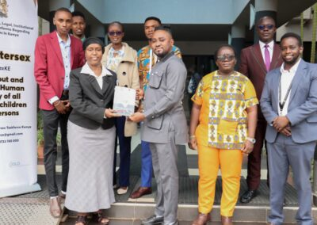

Commissioner Dr. Wamalwa Dennis Meets with Key Watch Ghana: A Benchmark Discussion

Commissioner Dr. Wamalwa Dennis recently welcomed delegates from Key Watch Ghana, a pivotal organization in the human rights sector. The delegates were in town to engage in a benchmark discussion on several crucial topics. This landmark meeting signifies an important moment in the international collaboration for human rights.
Collaborative Efforts Between State Human Rights Institutions and CSOs
One of the primary agendas discussed during the meeting was the collaboration between state Human Rights Institutions and Civil Society Organizations (CSOs). In particular, the focus was on the synergies between the Kenya National Commission on Human Rights (KNCHR) and the Intersex Persons Society of Kenya (IPSO Kenya, often referred to as IPICC). This collaboration is crucial, as it underlines the importance of collective efforts in protecting human rights and fostering equality.
Understanding the Mandate of KNCHR and IPICC
The delegates also sought to understand the mandate of the KNCHR and IPICC. Both organizations play key roles in advocating for human rights in Kenya. The KNCHR is an autonomous national human rights institution, while the IPICC provides support and advocacy for intersex individuals in Kenya. Their mandates are central to the promotion and protection of human rights in the country. 
Intersex Journey in Kenya: Struggles and Progress
A vital part of the discussion was dedicated to understanding the journey of intersex individuals in Kenya – their struggles and the progress made. This conversation is essential in illuminating the specific challenges that this group faces and the strides made towards recognizing and protecting their rights.
This benchmark discussion between Commissioner Dr. Wamalwa Dennis and Key Watch Ghana delegates promises to be the beginning of a strengthened collaboration. Such a partnership not only signifies the common objectives of these organizations but also the shared commitment to promoting and protecting human rights globally.